Center for Law and Graduate Studies, Cor Jesu College
Cor Jesu College needed a three-storey law and graduate school building on a site 182 metres from an active fault. As junior structural engineer at WMCabardo Engineering & Consulting, I modelled the structure, found where the earthquake forces would gather, and added steel only there. The design met the seismic code and the board’s budget.

- 4,970 m²built-up floor area
- 182 mfrom the Central Digos Fault
- 0.40–0.50gdesign ground acceleration
- PHP 16,060per m² in the structural estimate
A school 182 metres from an active fault
The hazard check came back clear on most counts: no ground rupture, liquefaction or tsunami risk. One line stood out. The Central Digos Fault runs 182 metres from the site, and the area is rated prone to ground shaking.
A school holds more people than an office, so the code treats it as an essential building. I designed for earthquakes of magnitude 7 and above, with a peak ground acceleration of 0.40 to 0.50g and an importance factor of 1.5.

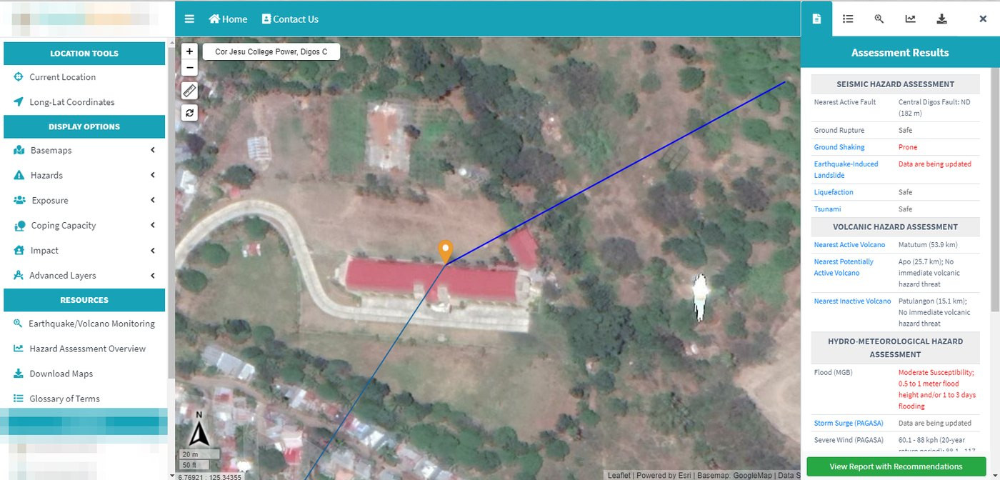
The first design was too heavy
The first model worked, but it used 63.7 kg of steel for every square metre of floor. The budget allowed about 50.6 kg. Closing that gap meant taking roughly 65 tonnes of steel out of a building that still had to ride out a major earthquake.
65 tof steel to remove to meet the budget
The usual fix is to make every beam and column bigger, or switch to composite steel and concrete sections. Both add cost across the whole building, including the parts that carry little seismic load.

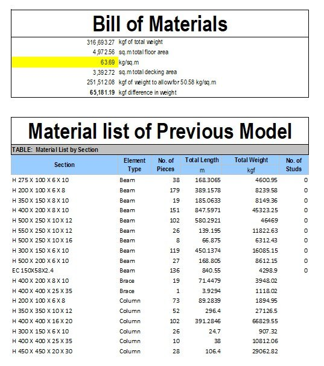
Strength only where the earthquake pushes
I ran the ETABS model again and again, moving Vierendeel trusses to a different position each time. A Vierendeel truss is a rigid steel frame shaped like a ladder. It lets the building flex under seismic load and absorbs energy without collapsing.
Placed only where the forces gather, the trusses did the work that bigger members would have done everywhere. The rest of the frame could stay light.

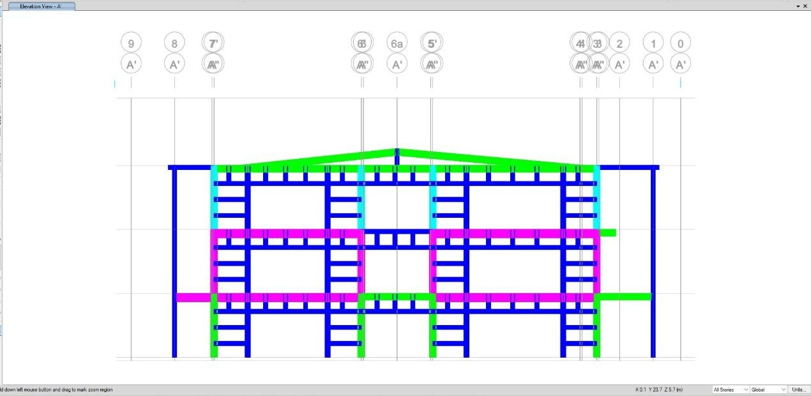
The trusses had to be imported as prefabricated steel, which added shipping and handling. I weighed that against the steel saved everywhere else. The savings were larger, and the import fitted both the budget and the schedule.

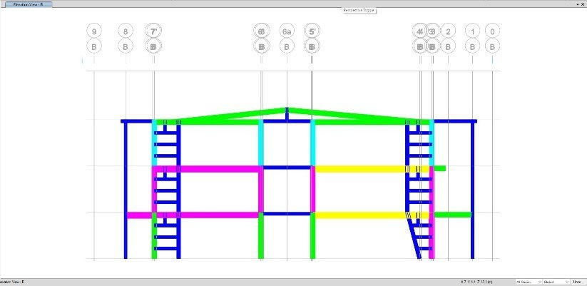

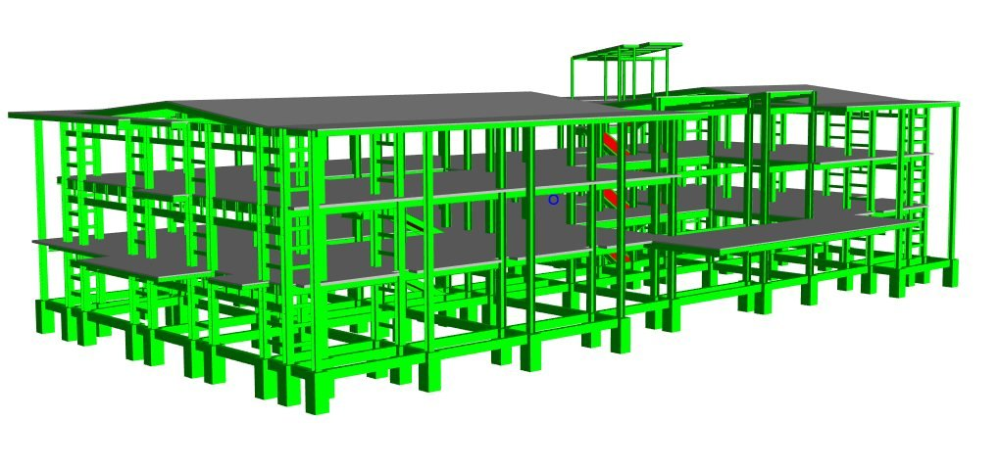
Testing it before it’s built
Every building has natural ways it wants to move. If one of them matches the rhythm of the ground, the shaking builds. I ran a modal analysis to find the first three and keep them clear of the expected ground motion.
Top view of the first three vibration modes from ETABS. The movement is exaggerated so it can be seen.
I also checked storey drift: how far each floor moves sideways against the floor below. The limit was 1.5% of the storey height. The design came in at 0.45%, under a third of the limit. Every steel frame passed the stress check, and I confirmed the results in SAP.
0.45%storey drift, against a 1.5% limit


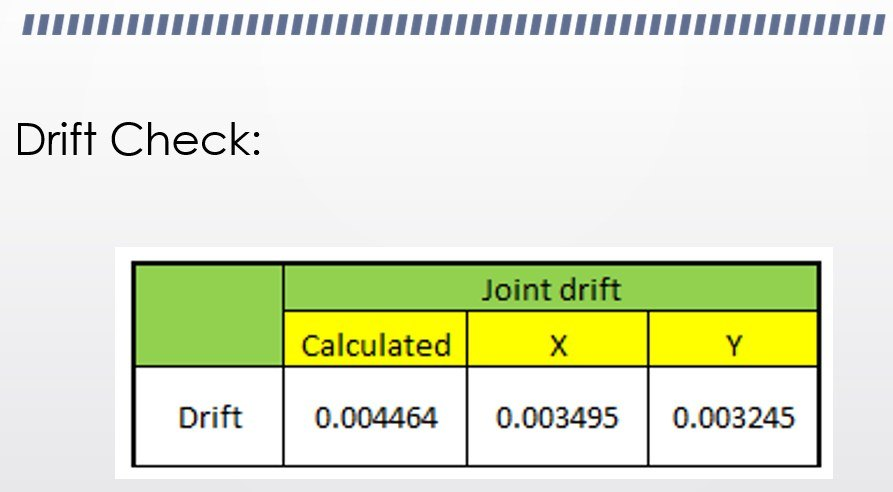

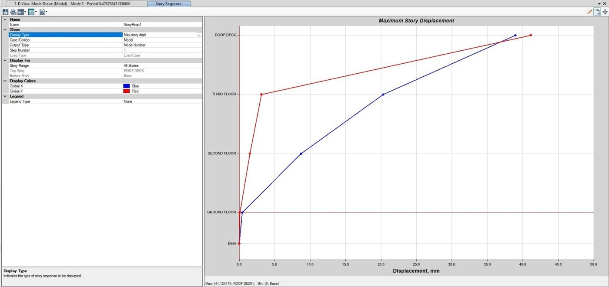

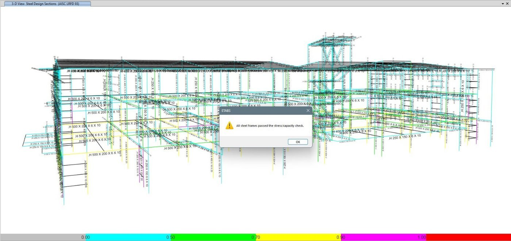
From model to site
The foundations came next. I designed them in VisualFoundation, checking bearing pressure, uplift, sliding and overturning on the SC soil profile from the soil report, then drew the plans and schedules in AutoCAD.

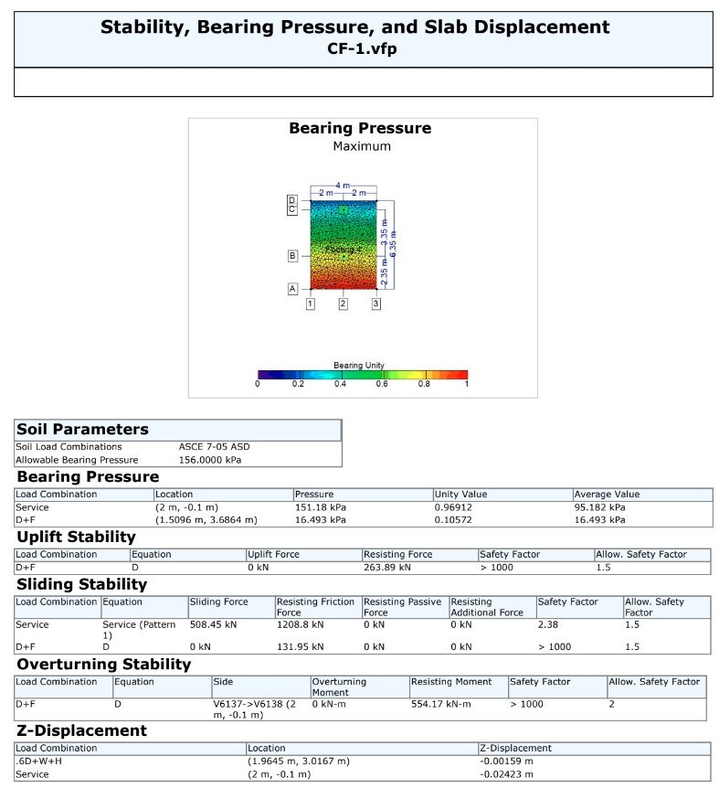

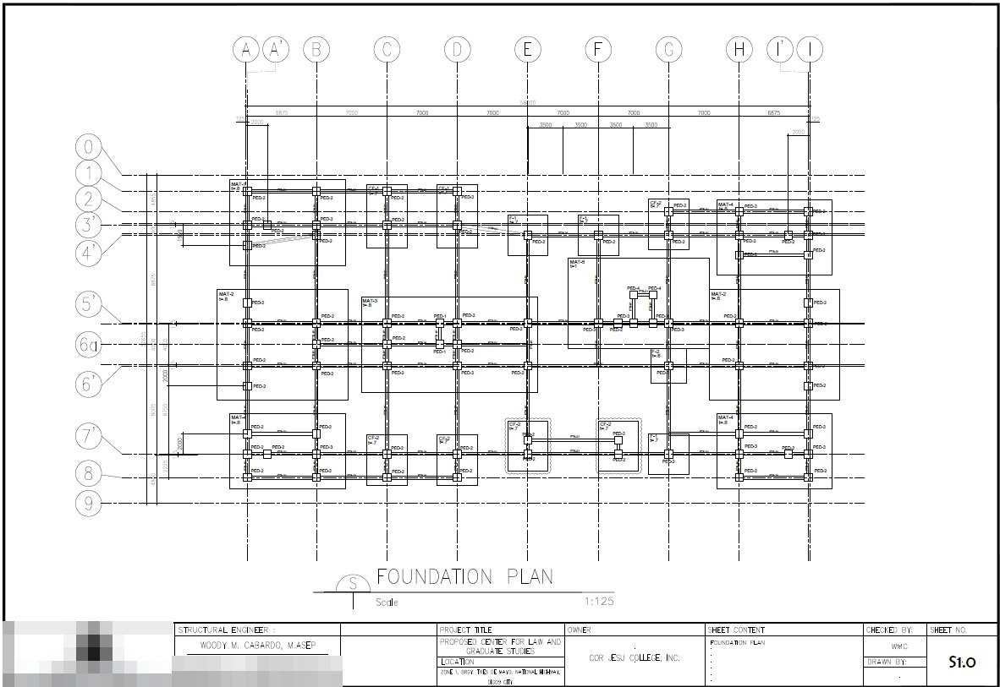
On site, I walked the truss locations with the structural engineer and measured where each one would go. With the general contractor, we kept the trusses out of corridors and classrooms and away from the building’s main views, so the architecture stayed as designed.

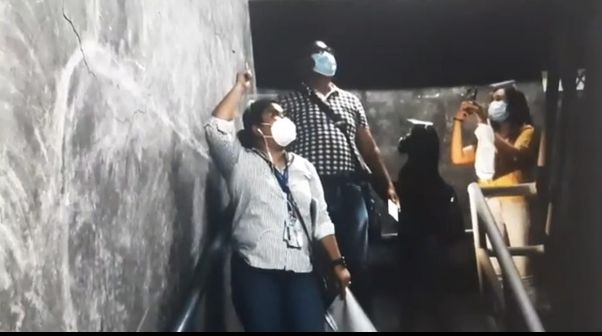
Getting a yes
Each time the design got cheaper, I wrote it up for the structural engineer with the analysis and a cost comparison. The structural engineer then took the options to the Cor Jesu College board.
The board members are not engineers, so the presentations leaned on ETABS animations like the ones above and side-by-side costs. The local government needed its own documentation showing the trusses met the seismic code.
The board approved the Vierendeel truss design. It met the NSCP and NBCP, and it came with full cost estimates, a bill of quantities and a bill of materials.
ToolsETABS · SAP · VisualFoundation · AutoCAD · Quantity surveying
Full engineering file
The rest of the project file. Select any figure to see it full size.
Cost and quantities
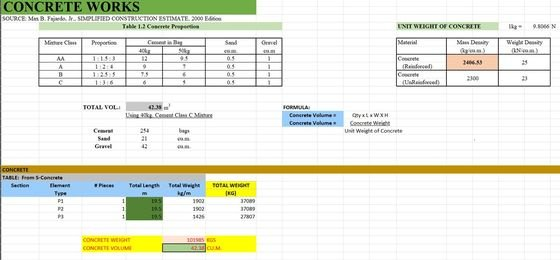
Concrete works estimate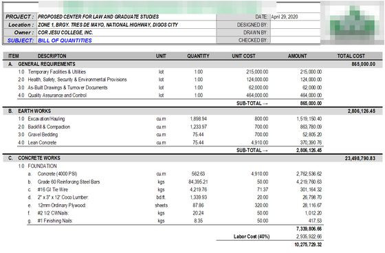
BOQ: general and earthworks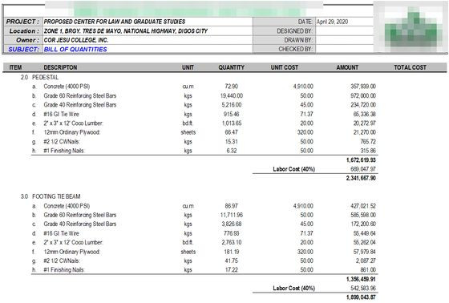
BOQ: footings and tie beams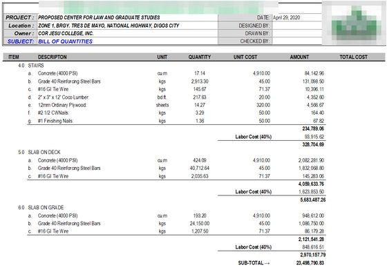
BOQ: stairs and slabs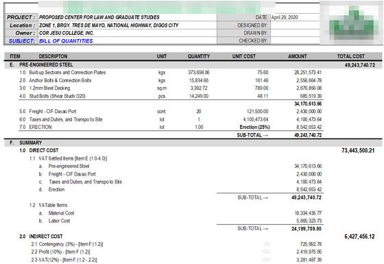
BOQ: pre-engineered steel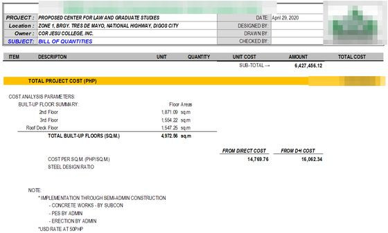
BOQ: cost per m²


Seismic analysis
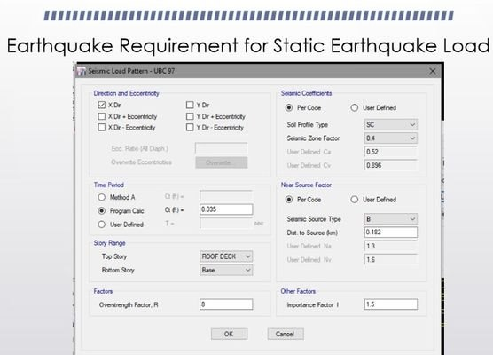
Static earthquake load inputs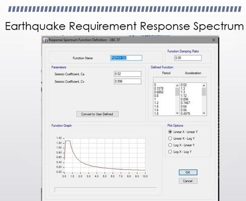
Response spectrum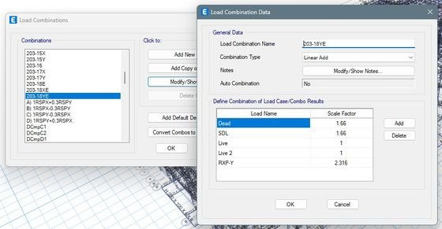
Load combinations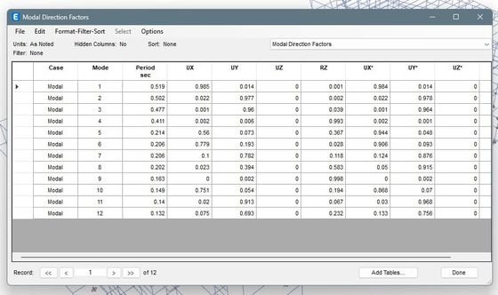
Modal direction factors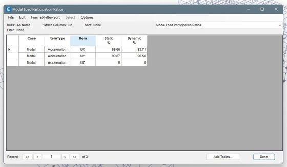
Modal load participation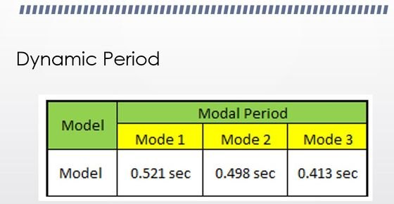
Dynamic period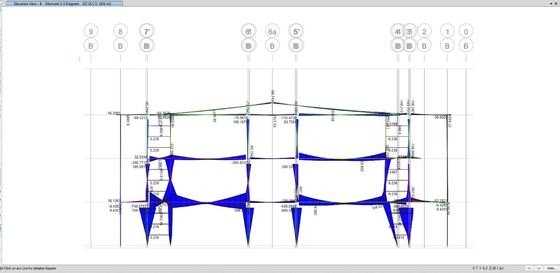
Bending moment, elevation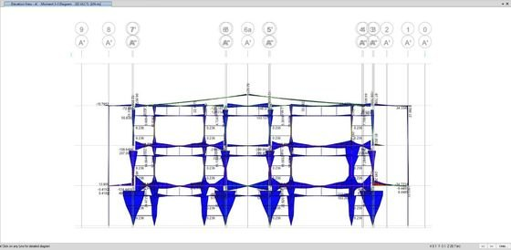
Bending moment, second elevation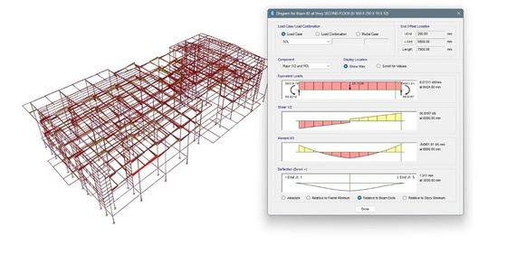
Shear and moment, key member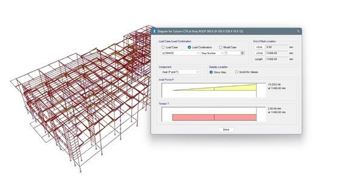
Shear and moment, second member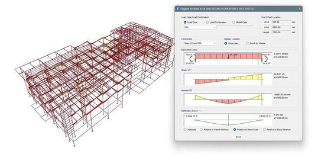
Member forces, 3D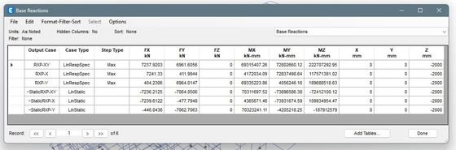
Base reactions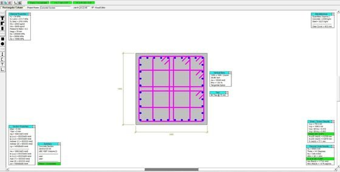
Column section check- Truss placement study A
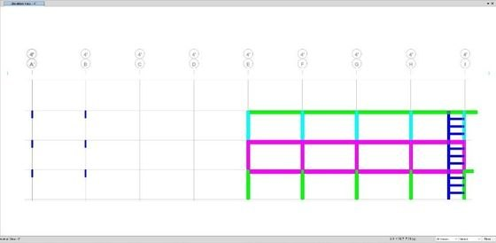
Truss placement study B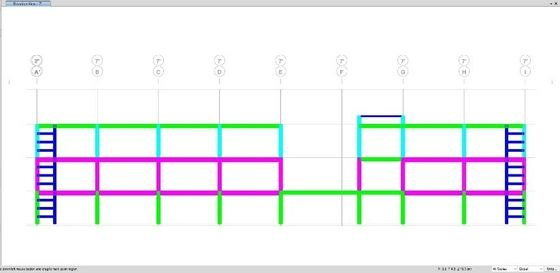
Truss placement study C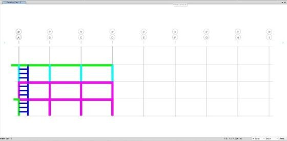
Truss placement study D